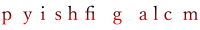

方針
定義や概念が先にあってそれを説明するのではなく、実際の実験と結びついた問題を考える中でそれらを見つけていきたい。例えば、いきなり座標の微分として速度を導入する代わりに、キャッチボールの運動を求めようとする中で、速度が座標の微分であることを自然に見いだしたい。
最初から満足のいくものは作れないので、少しずつ手直しを続けていく。そのため、完成度は章によってばらつきがあり、叩き台のままの章もある。手直しの基準は「今の自分から見て欲しいと思えるものになっているか」である。

1. プライバシーポリシー
（Google アナリティクス利用規約 第7項に基づく記述。）
このサイトでは、アクセス解析のために Google アナリティクスを使用しています。Google アナリティクスは、データ収集のために Cookie を使用します。Google アナリティクスでデータが収集、処理される仕組みについては、外部サイト「Google のサービスを使用するサイトやアプリから収集した情報の Google による使用」を参照してください。
2. リンク
このサイトはフリーソフトウェアを使用して作られているので、感謝の意を込めてそれらを紹介する。
gnuplot

gnuplotはグラフ描画ツールである。公式サイトのギャラリーはここ。コマンドは比較的単純で使いやすい。定番のツールであり、日本語のドキュメントも多く見つかる。このサイトでは、2次元グラフを描画するために使用している。
Matplotlib

Matplotlibはグラフ描画ツールである。公式サイトのギャラリーはここ。Pythonという既存のプログラミング言語を使って処理を記述する形になるので、ファイル入力やデータ加工などの複雑な処理と連携しやすい一方、設計思想が難解である。このサイトでは、3次元グラフを描画するために使用している。
Inkscape

Inkscapeは2次元イラスト作成ツールである。拡大縮小しても劣化しないベクター形式の画像を扱うためのツールである。このサイトのほぼすべての2次元図で使用している。
Blender

Blenderは3次元CGコンテンツ作成ツールである。1枚絵だけでなくアニメーションを出力することもできる。このサイトでは、力学編第13章のシミュレーション動画および3次元の図で使用している。
LyX

Lyxは数式を使った文書用のエディタである。PDFで出力するのが標準的な使い方である。このサイトの記事は全てこれを用いて書いている。
MathJax
Mathjaxはwebブラウザ上で数式を表示させるための標準的なライブラリである。このサイトの本文中の数式は全てこれを用いている。
Emscripten

EmscriptenはC++言語などで書かれたプログラムをwebブラウザ上で実行できる形に変換するためのツールである。右図のように、C++で書かれたシミュレーションが（コードに手を加えることなく）ブラウザ上で実行できる。このサイトでは、ブラウザ上で数値シミュレーションを実行するために用いている。
Git、GitHub、TortoiseGit

Gitはバージョン管理システム、即ち、過去のファイルと現在のファイルを比較したり、過去の状態に戻したりするツールである。過去の履歴は全てリポジトリと呼ばれるフォルダに格納される。GitHubはそのリポジトリをインターネット上に設置し管理するためのサービスである。TortoiseGitはGitを扱いやすくするツールであり、右図のように変更されたファイルを視覚的に確認できる。GitHubには作成したリポジトリを自動的にwebページとして公開する機能があり、このサイトはそれを使って公開されている。